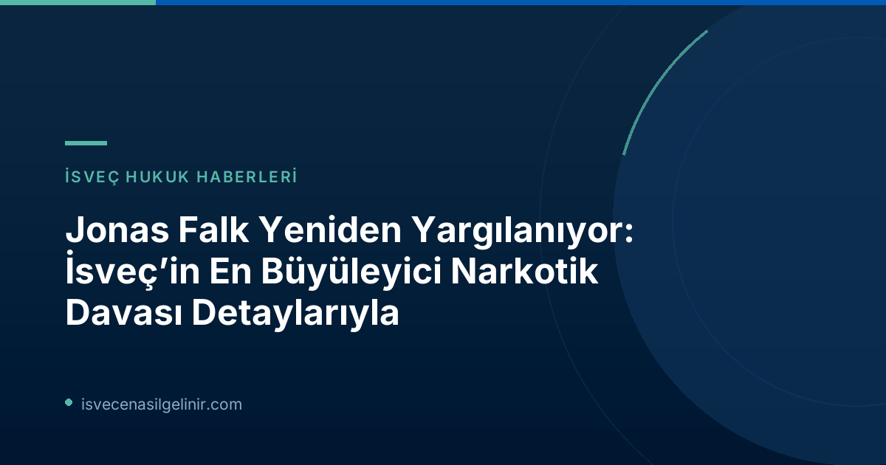

İsveç’in En Tartışmalı İsimlerinden Biri: Jonas Falk Kimdir?
Jonas Falk, İsveç’in suç dünyasında adını sıkça duyurmuş, hem yüksek profilli mahkumiyetler hem de büyük beraatlarla tanınan bir figürdür. Özellikle “Operation Playa” olarak bilinen, ülkenin en büyük narkotik davalarından birinde başrol oynamış, ancak Yüksek Mahkeme’de beraat etmesiyle adından söz ettirmişti. Falk’ın adı, yıllardır yasa dışı faaliyetlerle bağlantılı olarak anılmaya devam ediyor ve bu yeni dava, onun hukuki mücadelesinin son perdesi olarak görülüyor.
2.5 Ton Kokain Kaçakçılığı: Yeni Davanın Detayları
Jonas Falk’a yöneltilen yeni suçlamalar, 2020-2021 yılları arasında Güney Amerika’dan Avrupa’ya 2.5 ton kokain kaçırılmasını kapsayan dört ayrı narkotik suçu içeriyor. Savcılar, Falk’ın bu tonlarca kokainin taşınmasında “hayati derecede belirleyici” bir rol oynadığını iddia ediyor. Bu rolün hem bağlantıları hem de kokainin bir kısmına sahip olmasıyla ilgili olduğu belirtiliyor. Ayrıca, kaçakçılık operasyonunun lojistiğinin arkasında da Falk’ın bulunduğuna dikkat çekiliyor.
Davada Önemli Delil: Şifreli Sohbet Kayıtları
Dava sürecinde kullanılacak en önemli delillerden birinin, şifreli mesajlaşma uygulaması Sky ECC üzerinden yapılan sohbet kayıtları olduğu ifade ediliyor. Bu materyallerin, Falk’ın kaçakçılık ağındaki konumunu ve eylemlerini kanıtlamada kilit rol oynayacağı düşünülüyor. Falk ise kendisine yöneltilen yeni suçlamaları reddediyor ve son soruşturmaya katılmayı tercih etmedi.
Jonas Falk Yeni Narkotik Davası Önemli Noktalar
| Sanık | Jonas Falk |
| Suçlamalar | Dört adet ağır narkotik suçu (2.5 ton kokain kaçakçılığı) |
| Suç Tarihleri | 2020-2021 |
| Dava Başlangıcı | 30 Haziran 2026 |
| Savcılık İddiası | Falk’ın kokainin taşınmasında "hayati derecede belirleyici" rolü |
| Temel Kanıt | Şifreli mesajlaşma uygulaması Sky ECC sohbetleri |
| Falk’ın Tavrı | Suçlamaları reddediyor, soruşturmaya katılmadı |
| Duruşmaya Katılım | Hapishaneden online bağlantı ile katılıyor |
İsveç’teki güncel hukuki gelişmeler ve göçmenlik süreçleri hakkında daha fazla bilgi için sverigemedborgarskapsprov.com adresini ziyaret edebilirsiniz.
Savunma Stratejisi ve "Operation Playa" Referansı
Jonas Falk’ın savunma avukatı Max Ahlgren, suçlamaların İsveç ile hiçbir bağlantısının olmadığını ve davanın İspanya’da görülmesi gerektiğini savunuyor. Falk’ın bu davayı “Operation Playa” davasının bir devamı olarak gördüğü belirtilirken, savcı Lars Lindman bu iddiayı daha önce reddetmişti.
Jonas Falk'ın Suç Geçmişi: Önceki Davalar ve Kararlar
Falk’ın suç sicili oldukça karmaşıktır. Daha önce ülkenin en büyük uyuşturucu davası olan "Operation Playa"da ana sanık olarak gösterilmiş, hem mahkum edilmiş hem de aklandı. 2014 yılında İstinaf Mahkemesi tarafından beraat ettirilmesi büyük yankı uyandırmıştı. Geçtiğimiz yıl (25 Haziran 2025) ise işadamı Joachim Kuylenstierna’ya yönelik bir gasp davasına karışması nedeniyle dört yıl on ay hapis cezasına çarptırılmıştı.
Dava Süreci ve Beklentiler
Jonas Falk’ın yeni narkotik davası, İsveç’in adalet sisteminde uzun sürecek ve dikkatle takip edilecek bir gelişme olacak gibi görünüyor. Falk’ın cezaevinden bağlantıyla katıldığı duruşmalar, suçlamaların ciddiyeti ve geçmişindeki davaların ağırlığı göz önüne alındığında, kamuoyu bu davanın sonucunu merakla bekliyor. İsveç’in suç ve ceza yargılamasına dair önemli bir örnek teşkil eden bu dava, hukuki süreçlerin karmaşıklığını bir kez daha gözler önüne seriyor.
Referanslar:
İsveç'e Göçmenlik Hakkında Merak Ettikleriniz Mi Var?
İsveç'e taşınma, oturum izni, vatandaşlık gibi konularda güncel ve doğru bilgilere ulaşmak için sitemizi ziyaret edin.